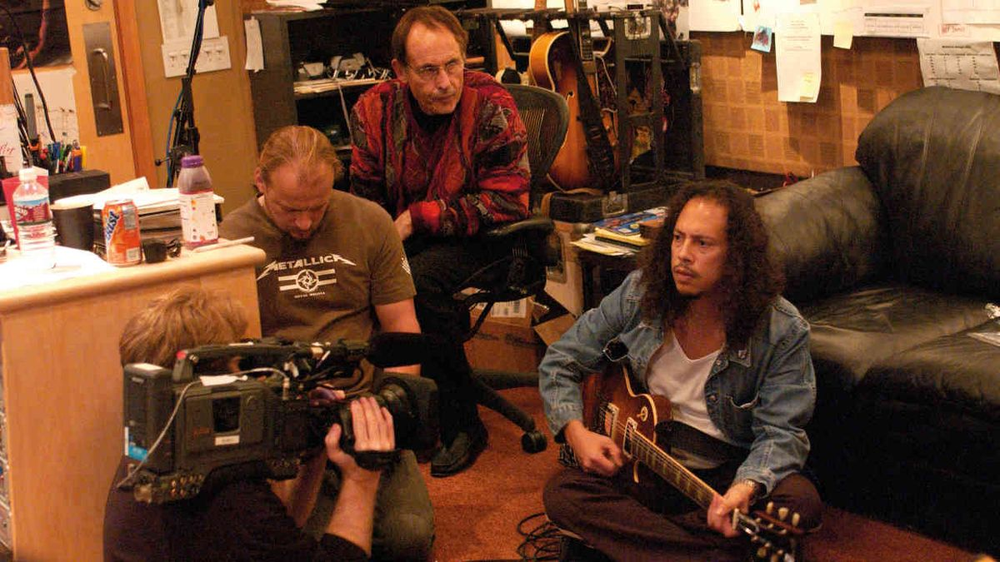
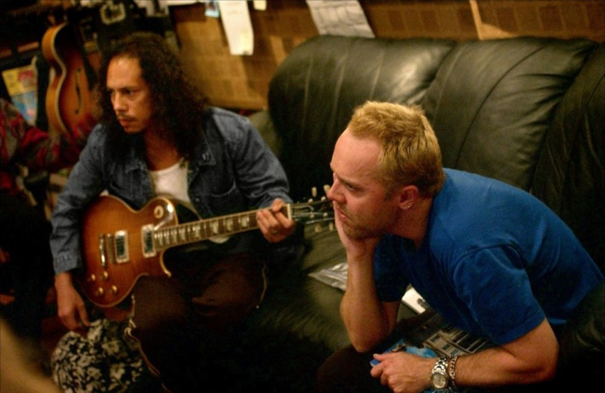
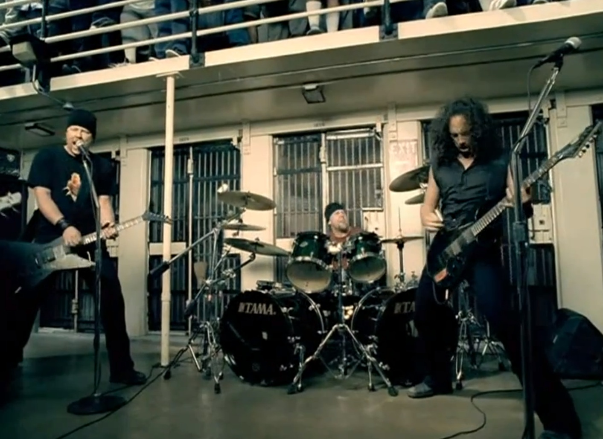
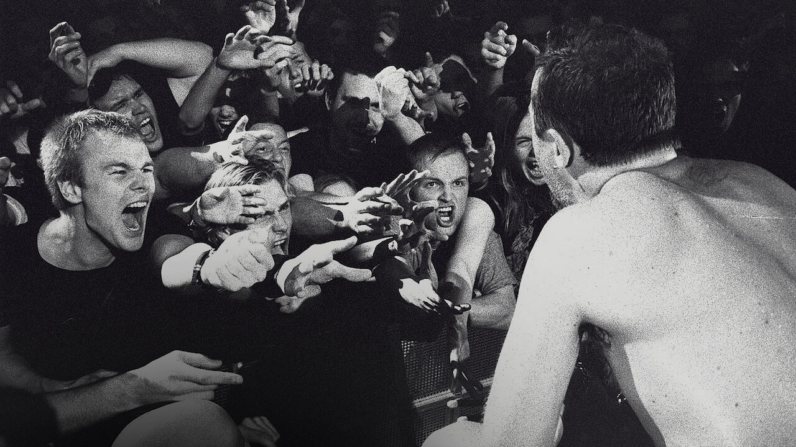

A Some Kind of Monster egy 2004-ben megjelent dokumentumfilm, amely a Metallica történetének egyik legviharosabb időszakát mutatja be. A film eredetileg a zenekar új albumának készítését dokumentálta, de végül egy sokkal mélyebb betekintést adott a tagok közötti konfliktusokba és a zenekar működésébe.
A forgatás idején a Metallica komoly nehézségekkel küzdött. Jason Newsted basszusgitáros kilépett a zenekarból, miközben a tagok között egyre több személyes és szakmai feszültség alakult ki. A helyzet annyira elmérgesedett, hogy a zenekar csoportterápia segítségét is igénybe vette.
A dokumentumfilm központi témája a St. Anger album elkészítése. A nézők testközelből láthatják a dalszerzési folyamatot, a vitákat, valamint azt, hogyan próbált a zenekar túljutni a belső problémákon. Az alkotás rendkívül őszinte módon mutatja be a Metallica emberi oldalát.
A filmet Joe Berlinger és Bruce Sinofsky rendezte. A Some Kind of Monster a rockdokumentumfilmek egyik legismertebb alkotásává vált, mert ritka betekintést nyújt egy világhírű zenekar kulisszák mögötti életébe.
A film megjelenése után sok rajongó és kritikus elismerte a nyers őszinteségét. A dokumentumfilm nemcsak a Metallica történetét mutatja be, hanem azt is, hogy még a legsikeresebb zenekaroknak is meg kell küzdeniük személyes és szakmai kihívásokkal.



